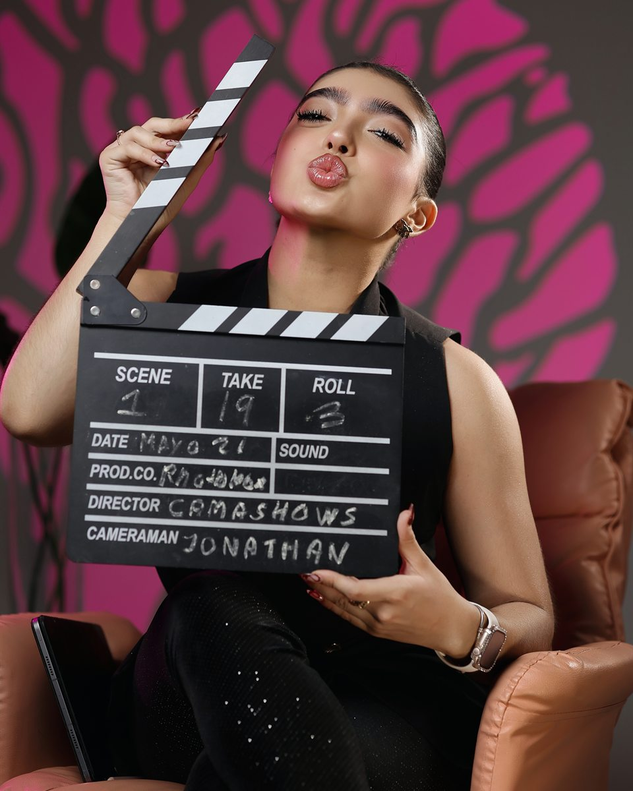

Itinerario · Edición en CapCut

Anfitriona
Camashow
Juliana Camacho, conocida en redes sociales como Camashow, te acompañará durante las dos jornadas de CAMASHOW MASTERCLASS 2.0 como mentora de todo el evento.
Itinerario · Edición en CapCut

Juliana Camacho, conocida en redes sociales como Camashow, te acompañará durante las dos jornadas de CAMASHOW MASTERCLASS 2.0 como mentora de todo el evento.